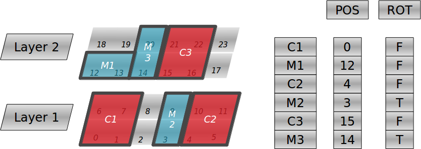
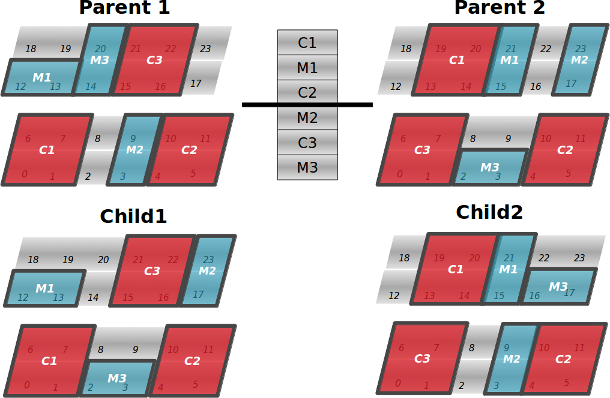
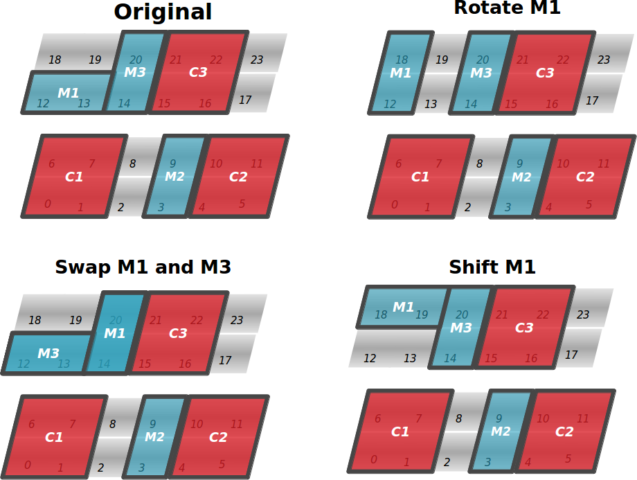

Three-dimensional (3D) integration is widely recognized as today’s most promising alternative to provide increased performance and chip footprint reduction
for multi-core processors. The performance improvement is allowed by a decreased total wiring length, and thus reduced interconnect delay times, and heterogeneous
many-core integration. However, in 3D scenarios, power density increases linearly with the number of layers leading to significant thermal issues that negatively affect the reliability and lifetime of integrated circuits. We propose a new floorplanner suitable for the thermal optimization of large 3D Multiprocessor Systems-on-Chips (3D MPSoCs), outperforming the results obtained with state-of-the-art proposals.
Representation
We introduce a novel representation suitable for fixed-outline floorplanning problems
that allows a direct mapping of the individuals into configurations of the architecture.
The example below shows a 2-layer architecture composed of 3 cores (C1,C2,C3) and 3
memories (M1,M2,M3). Each component of the architecture is characterized with a coordinate and a
boolean flag. The coordinate determines the location of the left-bottom corner of the
element while the flag indicates whether or not the given element is rotated. Note that a component can occupy several cells.
With this representation, the decoding of the
solutions is direct and does not require a placement heuristic.

Multi-Objective Search
The released thermal-aware floorplanner is based on Non-Dominated Sorting Genetic Algorithm-II, a well-known Multi-Objective Evolutionary Algorithm. Candidate solutions are evaluated according to the three following objectives:
- The number of topological constraints violated (partial overlapping between different blocks and components partly out of the borders of the chip).
- The wire length approximated with the sum of the Manhattan distances between interconnected blocks.
- The temperature of the chip.
Crossover
The crossover operator is based on a Single-Point crossover, in which two children (Child1 and Child2) are obtained from the selected
parents Parent1 and Parent2:
- We randomly select a point in [1..size], where size is the number of components of the architecture.
- Then, the components Ci of Parent1 and Parent2 such that point≥i are copied into Child1 and
Child2 respectively.
- Finally, the locations of the components Cj such that j ≥ point of Parent1 have to be transmitted to Child2
while Child1 must inherite from Parent2. If any of these components overlaps with an already placed block, then such component is assigned the coordinate and rotation flag of the other parent. If none of these two options leads to a feasible configuration, then the block is relocated according to a
First Fit strategy.

Mutation
The mutation of the solutions is performed in three ways, each with the same probability.
- Swapping the position of two elements of the chromosome, resulting in a change of the placement of the two involved components.
- Rotation of a component.
- Randomly moving a component one cell in one of the following directions: up, down, left, right, forward, and backwards.

Results
For an extensive analysis of the method, please check the doctoral dissertation (pp 133-157):
Arnaldo Lucas, I. (2013). Bioinspired heuristics for the thermal-aware Floorplanning of 3D MPSoCs. Heurísticas bioinspiradas para el problema de Floorplanning 3D térmico de dispositivos MPSoCs (Doctoral dissertation, Universidad Complutense de Madrid).
Tutorial
Authors and Contributors
This project was developed by Ignacio Arnaldo (@ignacioarnaldo) at the Parallel Architectures and Bioinspired Algorithms (PABA) group at Universidad Complutense de Madrid. Contact us by email at ignacioarnaldo@ucm.es